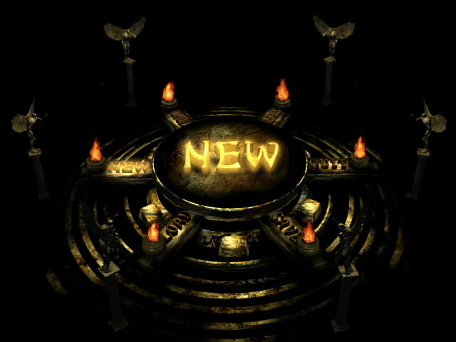
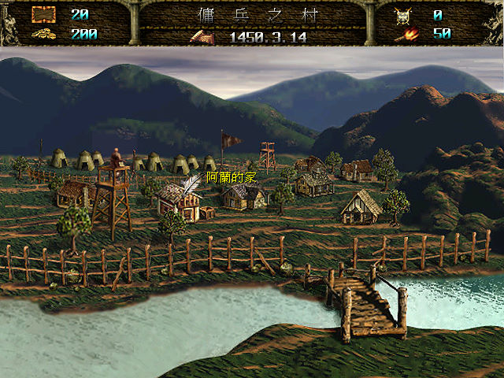
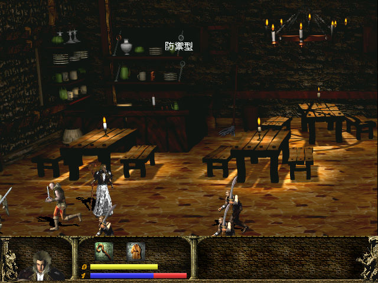

名稱：復活邪神2 (Atria 2: The Resurrection，中文版)
簡介：韓國Jamie 1998年出品的角色扮演遊戲，以斜角3D畫面呈現，採團隊即時方式戰鬥，
1999年由業訊中文化並代理發行 [待補]。



保護：光碟
操作：
上下左右 = 移動（雙擊=快速移動）
C = 確定／攻擊
X = 取消／跳躍
Z = 魔法
S = 切換人物
Tab = 狀態棒開關
+/- = 調整遊戲速度